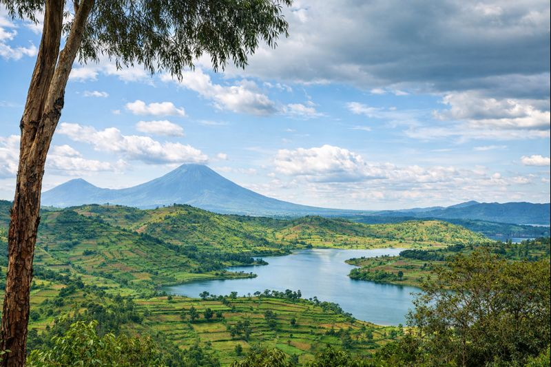

Musanze
85k
Parc National des Volcans
Sanctuaire des majestueux gorilles de montagne

RetourLe cœur vert de l'Afrique, entre volcans brumeux et modernité
Surnommé "le pays des mille collines", le Rwanda est un modèle de résilience et de développement. Destination d'écotourisme par excellence, il abrite les derniers gorilles de montagne dans les brumes du Parc National des Volcans. Propre, ordonné et incroyablement sécurisant, le pays offre des paysages d'une beauté saisissante, des forêts primaires de Nyungwe aux eaux paisibles du Lac Kivu. Un voyage au Rwanda est une immersion dans une nature préservée et une rencontre avec un peuple tourné vers l'avenir.
Explorez les 15 merveilles du patrimoine rwandais
Sanctuaire des majestueux gorilles de montagne

Un lieu de mémoire et de réflexion indispensable

Safari savane abritant les "Big Five"

Forêt primaire, chimpanzés et passerelle dans la canopée

Riviera rwandaise et détente au bord des eaux calmes

Demeure traditionnelle et vaches sacrées Inyambo

Vues panoramiques au pied des volcans Virunga

Tunnels de lave millénaires à explorer

La plus riche collection d'art et d'histoire du Rwanda

Le cœur battant de la vie locale et de l'artisanat textile

Foyer de l'art contemporain et de la créativité rwandaise

Icône architecturale moderne inspirée des palais d'antan
Randonnée et vue imprenable sur la capitale
Musée d'histoire naturelle et première résidence de Kigali
Atmosphère balnéaire au bord du lac volcanique
L'unité retrouvée et l'éclat des traditions.
La culture rwandaise est centrée sur l'unité ("Ubumuntu") et la préservation d'un héritage riche. Les danses traditionnelles Intore, avec leurs coiffes de crins de lion, sont un spectacle de grâce et de force. L'art de l'Imigongo, peint avec de la bouse de vache selon des motifs géométriques, témoigne d'une esthétique unique. Aujourd'hui, le Rwanda cultive aussi une culture de l'excellence, visible dans sa propreté exemplaire et sa modernité audacieuse.
Une journée mensuelle de travail communautaire qui unit le pays pour le bien commun.
Art traditionnel millénaire aux motifs géométriques noir, blanc et ocre.
"La danse des héros", symbole de l'élégance et de la bravoure des guerriers rwandais.
La "dignité" rwandaise, concept pilier de la renaissance et de l'autonomie du pays.

Ramenez chez vous une pièce de la renaissance rwandaise. De l'or noir du café aux paniers Agaseke.
 Icône
Icône
Panier traditionnel tissé à la main, symbole de paix et d'unité, utilisé pour offrir des cadeaux.
 Premium
Premium
Un café d'altitude aux notes sucrées et acidulées, primé dans les meilleures compétitions mondiales.
 Art
Art
Art géométrique traditionnel réalisé sur bois, une décoration élégante et authentique.
Thé noir de haute qualité cultivé sur les pentes fertiles du nord du pays.
Tissu en coton imprimé aux motifs vibrants, idéal pour des créations de mode uniques.
Objets en terre cuite façonnés selon des techniques ancestrales par les artisans locaux.

Parc des Volcans

Forêt de Nyungwe

Kigali, Centre

Kigali, Convention District

Gisenyi, Bord de lac

Akagera National Park
La cuisine rwandaise est saine, simple et savoureuse, mettant en avant les produits de la terre et des lacs.
Feuilles de manioc pilées et cuites avec des légumes et de la farine de graines de tournesol.
Le plat national de rue, grillé à la perfection et servi avec des plantains.
Célèbre plat de porc grillé, nommé ainsi d'après le luxe de Mercedes-Benz.
Pâte de maïs ou de manioc, base consistante de nombreux repas.
Bananes plantains frites, dorées et légèrement caramélisées.
Bananes vertes cuites à la vapeur, une influence de la région des grands lacs.
Petits poissons du Lac Kivu, croustillants et servis en apéritif.
Poisson frais du lac, préparé avec des herbes locales.
Citrouille coupée en dés et cuite avec des haricots secs.
Sauce onctueuse aux arachides, idéale pour napper le riz ou l'ugali.
Une tasse du meilleur café Arabica du monde, cultivé sur les collines.
Ragoût traditionnel de plantains, viande et légumes verts.
Découvrez la ferveur et l'esprit de rassemblement du Rwanda à travers ses grands rendez-vous.
La prestigieuse cérémonie de baptême des bébés gorilles (Septembre) au pied des volcans.
La course cycliste la plus populaire d'Afrique, une fête nationale sur toutes les collines (Février).
Festival international de musique célébrant les rythmes africains et la créativité urbaine.
C'est le meilleur moment pour le trek des gorilles et la randonnée. Les sentiers sont secs et le ciel est souvent dégagé.
Malgré les pluies, c'est la période où la nature est la plus verte et luxuriante. Idéal pour la photographie et l'observation des oiseaux.
Le Rwanda est l'un des pays les plus sûrs au monde. On peut marcher à Kigali à toute heure en toute sérénité.
Les sacs plastiques sont strictement interdits. Ils seront confisqués à l'aéroport. Utilisez des sacs réutilisables.
Le silence et le respect sont de mise aux mémoriaux. Ne jetez jamais de déchets par terre, c'est très mal vu.
Franc Rwandais (RWF). Le paiement mobile (Momo) est omniprésent. Les cartes sont acceptées dans les grands établissements.
Chef Guide Gorilles de Montagne
Avec 20 ans d'expérience au Parc des Volcans, Jean Bosco connaît chaque famille de gorilles et leur comportement.
Experte Histoire & Mémoire
Marie Claire vous accompagne dans la compréhension de l'histoire du Rwanda et de sa renaissance exceptionnelle.
Guide Nature & Oiseaux
Spécialiste de la forêt de Nyungwe, Eric est un expert pour l'observation des chimpanzés et des oiseaux endémiques.